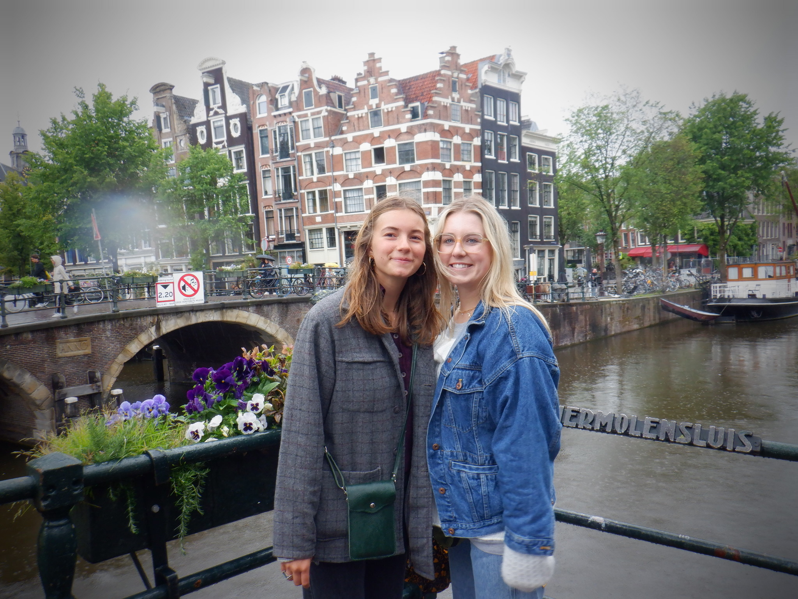
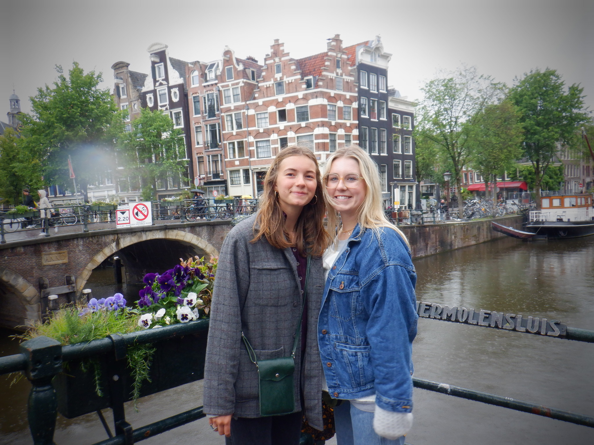

I was born in England and lived there for 8 years. Since then I have lived in Oregon, Florida and Texas. I have 2 brothers and 1 sister. We all like to do fun things together like snowboard, swim or go out together. In my free time, I like to hang out with friends, read by the lake and cook. New York Times is my favorite place to get recipes from. My family loves to travel, so I have been lucky enough to visit some amazing places. A few of my favourite places I have been to so far are Greece, Alaska, Amsterdam and France.
 



Right now I am a sophomore at Elon University. I major in communication design and minor in food studies. I went to high school in Florida at Berkeley Preparatory School for my first two years and Ray High School in Texas for my last two years.